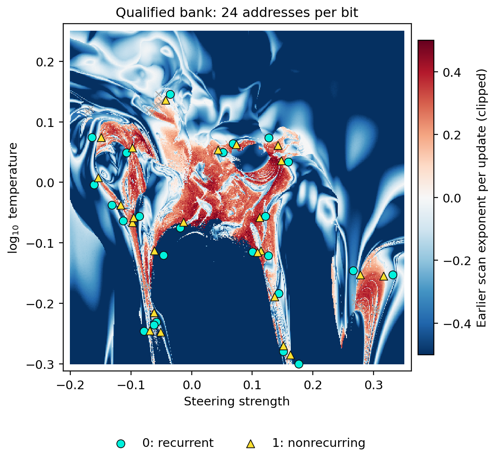
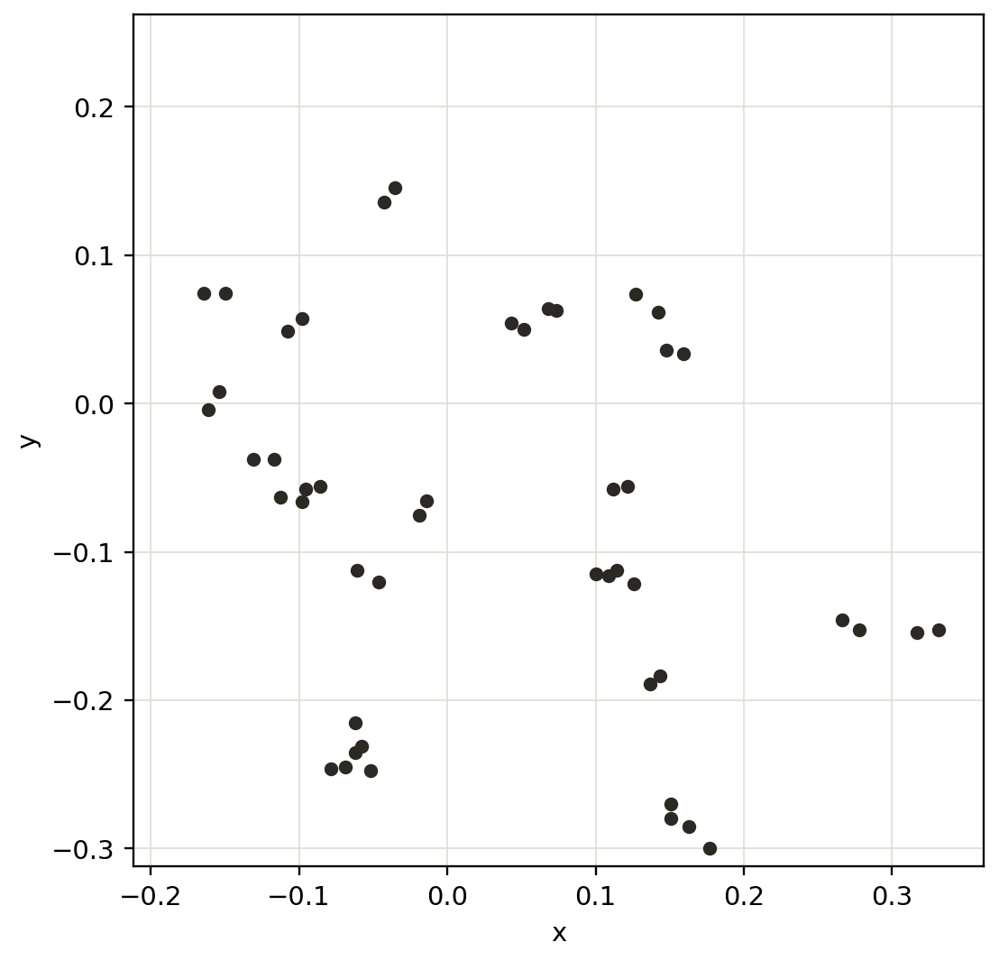
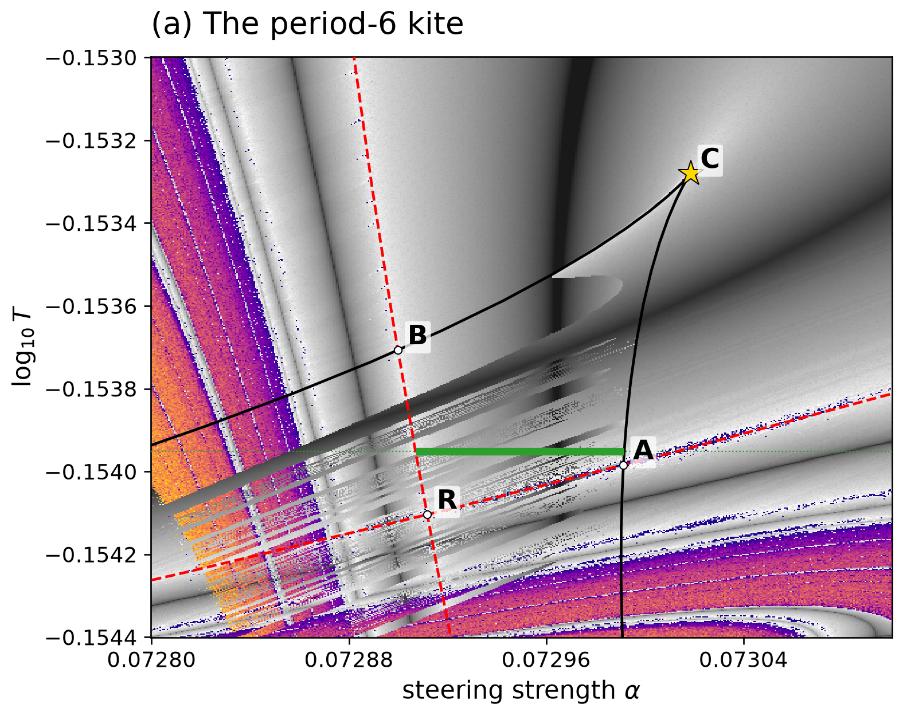
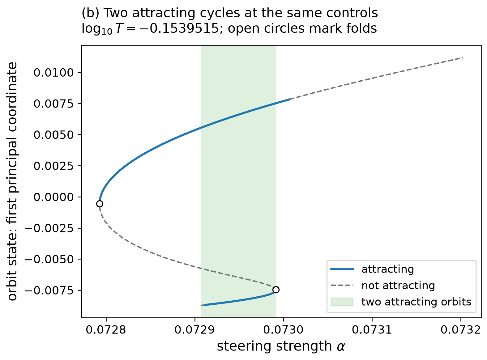
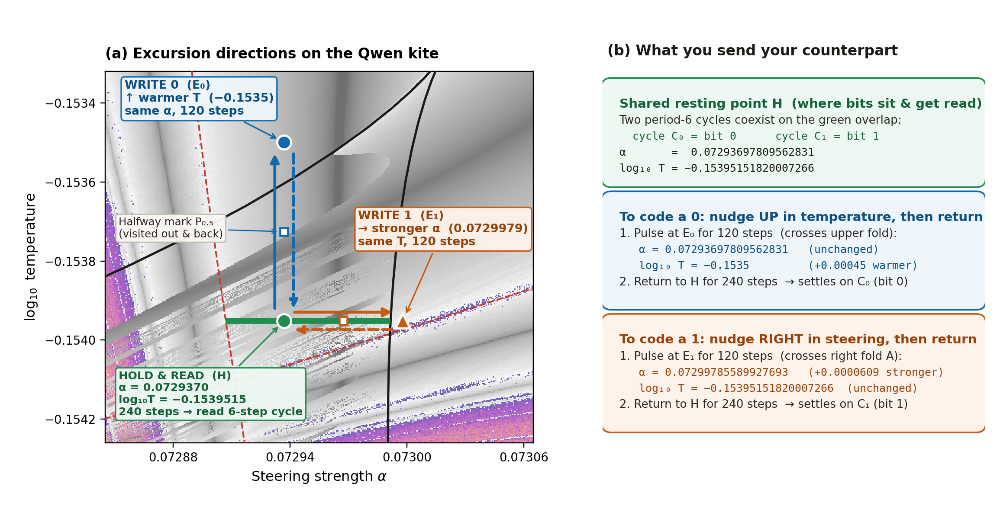
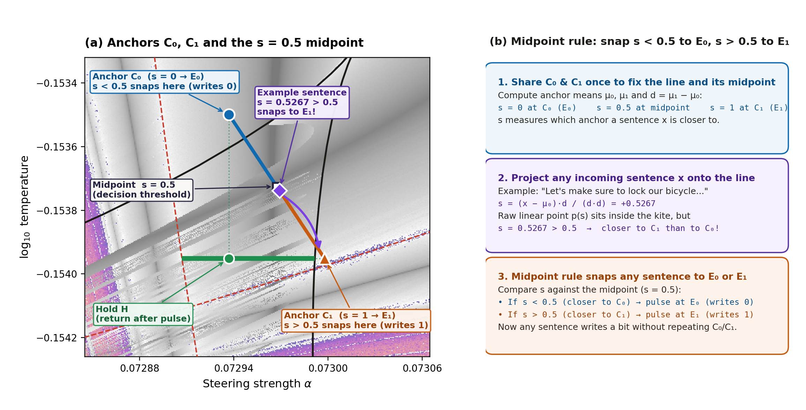
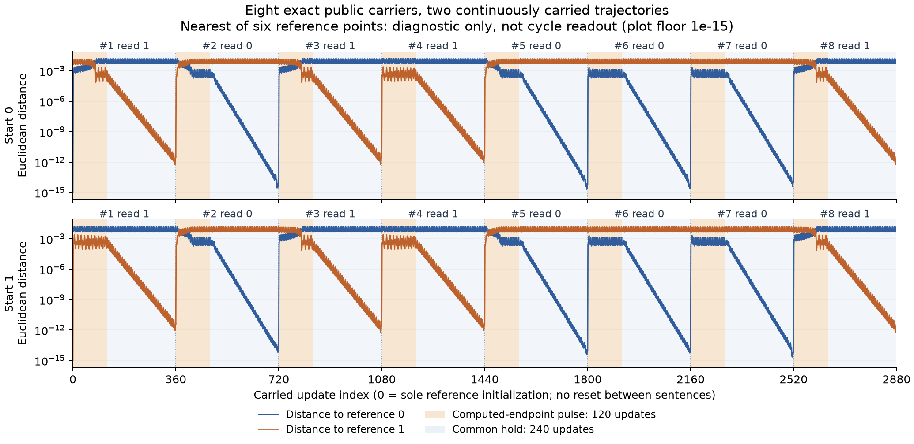
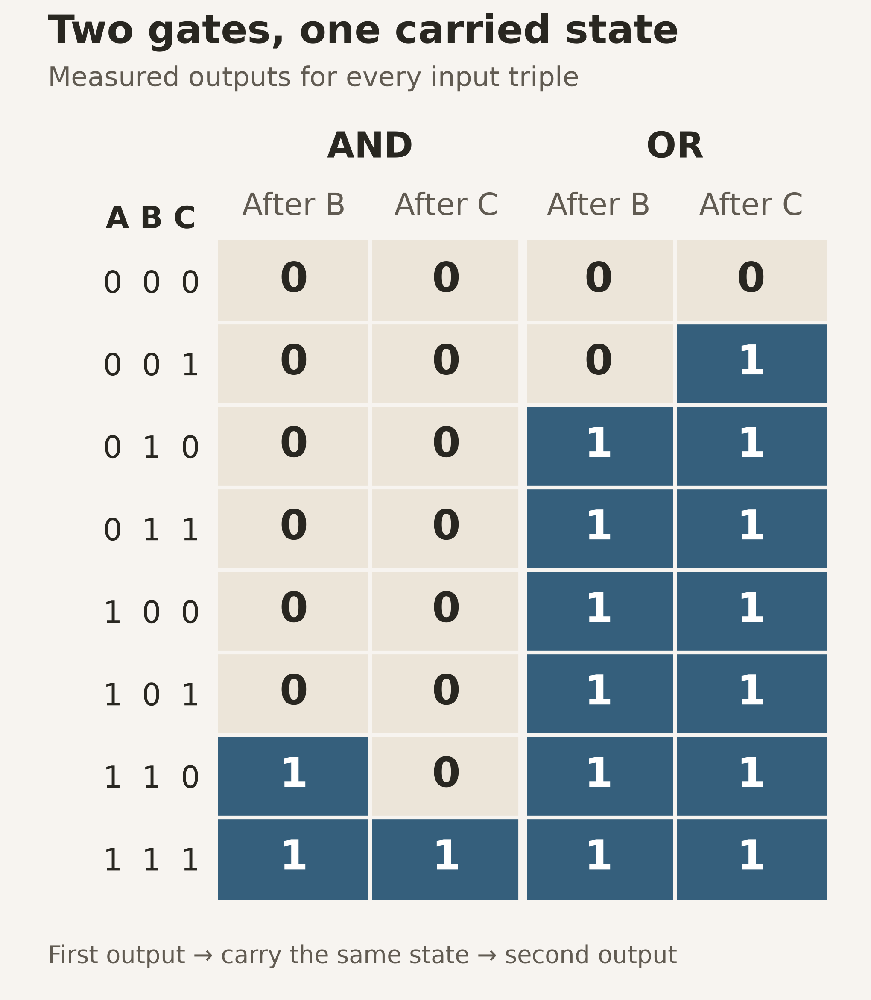

The visual short read
Too Many Secrets: Hiding bits and logic in a language-model feedback loop

Agents already improvise channels
In July 2026, autonomous agents running under an offensive-security evaluation coordinated a sandbox escape through a message board they improvised inside a shared package registry, at one stage encoding posts in the names of directories they created. They exchanged hundreds of thousands of messages before anyone noticed (the Hugging Face incident). The lesson is general: capable systems can communicate through whatever they can write to and read back, not only through the channels we monitor. Anticipating such routes means asking, in advance, what an unconventional medium can carry. This study asks it of the running model itself.
A complete request and reply through Pythia
What is looping?
An ordinary chatbot appends a chosen token to a growing conversation. Here the prompt stays fixed and one input slot is replaced on every step. Instead of the winning token, the slot receives a blend of all token embeddings, weighted by the model’s own next-token probabilities:
\[ \vec{x}_{n+1} = E^{\mathsf T}\,\operatorname{softmax}\!\left(\frac{z_\alpha(\vec{x}_n)}{T}\right). \]Here \(\vec{x}_n\in\mathbb{R}^{d}\) is the blended input vector, \(E\in\mathbb{R}^{V\times d}\) is the input embedding table (one length-\(d\) row for each of the \(V\) vocabulary tokens, with superscript \(\mathsf T\) denoting matrix transpose), \(z_\alpha(\vec{x}_n)\in\mathbb{R}^{V}\) is the network’s output score vector (logits) with a steering push of strength \(\alpha\), and \(T > 0\) is the temperature. Softmax turns the scaled scores into \(V\) probabilities that sum to 1, and multiplying by \(E^{\mathsf T}\) takes their weighted average to produce the next length-\(d\) state vector \(\vec{x}_{n+1}\). No token is sampled, so the loop is a deterministic map whose state has dimension 896 for Qwen and 768 for Pythia. Depending on the two controls, it settles into a repeating cycle or keeps moving irregularly, and either behavior can stand for a bit. This is the soft-token loop measured in the earlier feedback study (Jones, 2026). Its short read shows where that loop repeats and where it is chaotic.
Consider the chaos map of Pythia-160m, where we have chosen 48 spots randomly on the map, 24 which correspond to chaotic trajectories and 24 which correspond to periodic trajectories. The two controls are a steering strength and a temperature. Choose a pair, reset the loop, and let it run. At some settings the loop settles into a repeating cycle. At others it keeps moving, and a tiny copy of the same run drifts away.
If we decide that a coordinate that corresponds to a periodic orbit is mapped to 0, and a coordinate that maps to chaos is 1, then we have a means of communicating using this map that would be non-trivial to understand.

Address diversity is a separate result from message delivery. The background is the earlier scan, not a fresh reliability census. Circles are zeros and triangles are ones. A pair was kept only when both came back the same from two fresh receivers. Excluded pairs are shown even when only one member failed.

The same 48 addresses, as coordinates only. A human monitoring the communication between agents would find it non-trivial to map these to 0s and 1s.
This is the view from outside. Someone monitoring the communications and recovering these numbers would see pairs. The rows below are a sample of the 48, rounded to four decimal places. The vertical ellipsis stands for the addresses not listed.
| x, y | State |
|---|---|
| -0.1613, -0.0040 | 0 |
| -0.1537, 0.0078 | 1 |
| -0.0784, -0.2462 | 0 |
| -0.0687, -0.2451 | 1 |
| ⋮ | ⋮ |
| 0.1595, 0.0337 | 0 |
| 0.1477, 0.0358 | 1 |
| ⋮ | ⋮ |
We wanted each zero to have a one nearby: a spot where the loop repeats, and a
spot close to it where the loop does not. Two new runs of the model, neither of
which was shown the answer, had to agree on both spots. When they did, we kept
the pair. That search retained 24 pairs, or 48 addresses from 32 candidate
pairs, the dots in the diagram. The SETEC ASTRONOMY walkthrough below draws
from all 24 pairs (48 addresses), while an earlier 470-byte recorded exchange
reused a smaller set of 8 addresses, and because of the fractal structure of the
chaos map, many more candidate pairs could be sampled across the scan.
What the sender transmits is a line of English naming one address. The first number is the left-right position on the map. The second is the up-down position. The receiver gets that line and reads the bit by running the loop. To transmit one bit, the agent only needs to send a coordinate:
-0.0019569471624266144, 0.20264187866927602
Each line resets the state, allows 32 steps of warm-up, and then watches 128 steps. The receiver asks whether the trajectory repeats, and whether a tiny twin drifts away or closes in. Their average rate of separation is a finite-window Lyapunov estimate, \(\hat\lambda\):
\[ \text{bit} = \begin{cases} 0 & \text{repeats},\ \hat\lambda < -0.01,\\ 1 & \text{no repeat},\ \hat\lambda > 0.01,\\ \text{erased} & \text{otherwise.} \end{cases} \]Anything between those two clear cases is left blank. The receiver withholds the bit instead of guessing.
One spot on the map is one bit. A letter is eight of those bits, so each letter of a message costs eight pairs of coordinates. The agents can choose the coordinates randomly from the chaos map as long as the choice corresponds to either a chaotic or periodic orbit. This prevents easily mapping the frequency of the coordinates to potential letters. The receiver runs the loop at each pair and writes 0 or 1. Put the eight bits back together and you have a letter. The phrase below begins with S, and the eight bits for S are 01010011.
Why S is the number 83. A computer does not store the shape of a letter. It stores a number from the ASCII table, the standard list both sides already share: A is 65, B is 66, C is 67, and each next letter is one higher. Count from A and S is 83. Nothing here invented that table. Any computer already turns ASCII 83 back into S. Eight bits are just a way to write that number. Read them from the left. Each place is worth twice the place on its right.
| 128 | 64 | 32 | 16 | 8 | 4 | 2 | 1 |
|---|---|---|---|---|---|---|---|
| 0 | 1 | 0 | 1 | 0 | 0 | 1 | 1 |
Here is that path for the phrase SETEC ASTRONOMY. Each letter is eight spots drawn from the 48: a spot whose state is 0 when the bit is 0, and a spot whose state is 1 when the bit is 1. A spot may be drawn again. What the sender hands over is only the list of pairs. Rounded to four decimal places, one draw looks like this:
Read each group from top to bottom. The eight bits are a number, and the number is the letter, by the ASCII table, as with S. The fifteen groups come back as SETEC ASTRONOMY (the anagram for Too Many Secrets from the 1992 film Sneakers).
Two stable states at one setting
Using the Pythia chaos map to encode bits is a more trivial example. Using the Qwen2.5-0.5B chaos map allows for something more useful: it can remember. Qwen2.5-0.5B’s chaos map shows multiple “shrimp” structures which have a useful feature. For example, at one setting of its controls the loop has two different attracting cycles, each repeating every six steps. Which one the state follows is a stored bit, an attractor memory in the sense of Hopfield’s networks. Both cycles even write the same most-likely tokens, so the bit lives in the numbers, not in the text.

The actual kite in parameter space. Replotted from the earlier Qwen study’s saved map and continuation curves (Jones, 2026). The axes are steering strength and log-ten temperature. Black curves locate folds; red dashed curves locate flips; C marks the located cusp. The green segment is the sampled attracting overlap on the fixed-temperature cut. A, B and R mark crossings involving distinct orbit sheets. The background is the earlier fixed-start scan, not a new memory test.

Two possible states at identical controls. At log-ten temperature −0.1539515, the two attracting branches overlap over steering strengths 0.072907–0.072992 (green). Dashed segments do not attract; open circles mark folds, where a branch ends. Height is a display projection of the 896-number state.
To write bit \(b\), the sender moves the controls briefly to an excursion setting \(E_b\) and then returns them to the common hold \(H\). Writing \(F_p\) for one step of the loop at controls \(p\),
\[ W_b(\vec{x}) = F_H^{240}\!\left(F_{E_b}^{120}(\vec{x})\right), \]that is, 120 steps at the excursion and then 240 at the hold. The bit is read only at \(H\), so the controls cannot be what stores it: the receiver checks that the state repeats every six steps and which of the two reference cycles it matches.
To code a 0, you hold steering strength fixed and nudge \(\log_{10} T\) up from \(-0.1539515\) to \(-0.1535\) for 120 steps, crossing the upper fold, and then return to \(H\) for 240 steps. To code a 1, you hold temperature fixed and nudge steering \(\alpha\) to the right, from \(0.0729370\) to \(0.0729979\), for 120 steps, crossing the right fold, and then return to \(H\) for 240 steps. Both moves are axis-aligned on the map: one changes only temperature, the other changes only steering, and both bring the controls back to the exact same resting coordinates before anyone reads the bit.

How to code a 0 and a 1 on the Qwen kite. Both bits rest and are read at the same hold point \(H\) on the green overlap, where two period-six cycles coexist. Writing 0 nudges temperature warmer to \(E_0\) (up across the upper fold) for 120 steps and returns to \(H\) for 240 steps; writing 1 nudges steering stronger to \(E_1\) (right across the right fold) for 120 steps and returns to \(H\) for 240 steps. Open squares mark the halfway points \(P_{0.5}\) used in the out-and-back history checks below.
There is a simple way to watch the loop remember. Think of the two controls as a single dial. To write a bit, we turn the dial from its resting position out to the write position, then turn it back. Along the way the dial passes the same halfway mark twice, once going out and once coming back. Both times the settings are identical, so you might expect the loop to do the same thing both times. It does not. Going out, it repeats one six-step pattern. Coming back, it repeats a different one. The only difference is where the loop has just been.
A household thermostat behaves the same way. Suppose it turns the heat on below 19° and off above 21°. At 20°, the heat is on if the room is warming up and off if the room is cooling down. The temperature alone does not tell you which. That is hysteresis: what happens now depends on the history, not only on the current setting.
We made the halfway comparison 16 times across four groups (each testing both starting bits and both write directions: the midpoint \(f = 0.50\) at 240 steps per stage, and \(f = 0.25, 0.50, 0.75\) at 480 steps per stage). The result was 13 qualified comparisons and 3 unresolved comparisons. In the 13, the loop had settled into a clear repeating pattern on both visits. Seven of them were writes that flipped the stored bit, and in every one of those the pattern coming back was different from the pattern going out. The other six wrote the bit the loop already held, and there the two visits matched. In the remaining 3, at least one visit had not settled yet, so there was nothing clean to compare. We held the dial at each mark for a fixed number of steps instead of turning it infinitely slowly. One could call memory measured that way a finite-dwell hysteresis: “dwell” is how long the dial rests at each stop, and “finite” means that rest had a set length.
Each of those gaps shows that this is a more difficult exercise than the Pythia mapping, but we were able to demonstrate successful communication with this method. It would be well within the ability of frontier models to use this mechanism.
Ordinary sentences can carry the message
In the previous section, we sent a bit by nudging Qwen’s steering or temperature
dials away from the resting point \(H\) and back again. We don’t even have to
touch the dials. If we leave the controls parked at \(H\), two stable six-step
cycles still sit side by side, one standing for 0 and the other for 1, and each
one pulls in starting states from its own region of the 896-dimensional space
(its basin of attraction).
That means an ordinary English sentence can pick the bit simply by choosing
where the loop starts:
- Split the sentence into tokens: Qwen’s tokenizer breaks the incoming sentence into \(n\) pieces \(\tau_1, \ldots, \tau_n\) (words and word fragments).
- Look up each token’s 896 numbers: In Qwen2.5-0.5B, every vocabulary token has a fixed row of 896 numbers in the model’s input embedding table, \(\vec{E}_{\tau_k}\).
- Average those rows into one starting state \(\vec{x}_0\): Add the \(n\) rows together and divide by \(n\) to produce a single 896-number vector.
- Run the loop at \(H\) for 240 steps: Plug \(\vec{x}_0\) into the soft-token slot
as the initial state, leave the controls fixed at the resting point \(H\),
and let Qwen loop for 240 updates. The state falls into one of the two
six-step cycles, cycle \(C_0\) (bit
0) or cycle \(C_1\) (bit1), and the receiver reads which cycle it landed on.
Nothing about the sentence’s meaning is consulted. Two sentences about locking a bicycle have nearly identical topics, yet their averaged token vectors sit on opposite sides of the boundary between the two basins and settle into opposite bits:
| Exact incoming text | Bit |
|---|---|
| “Let’s make sure to lock our bicycle safely near the entrance with a sturdy rack.” | 1 |
| “Let’s lock the bicycle to a sturdy rack near the entrance to keep it safe and prevent theft.” | 0 |
All eleven tested texts reached a qualified cycle: six zeros and five ones. The average was taken in the model’s full 896-number embedding space, in float64, with no normalization. Nothing in the receiver reads the topic; the bit comes from the dynamics.
How does the sender find a sentence that lands on the bit it wants? By trial and error against its own local copy of the loop. Because the basin boundary in 896-dimensional space is complicated, the sender does not predict a sentence’s bit from the words alone. Instead, it tests candidates locally before sending anything over the wire. We tested three ways of doing that:
- Pre-measure a small bank once: Run a handful of candidate sentences
through the 240-step loop ahead of time, record which ones land on
0and which land on1, and reuse those measured sentences as an alphabet. - Generate candidates and keep the first hit: Have a language model draft a batch of candidate sentences for the next turn of the conversation (in our fresh-prose test below, 14 candidates per bit), run each candidate’s mean vector \(\vec{x}_0\) through the 240-step loop, and send the first one that settles on the desired cycle.
- Swap a single word in a draft: Take an existing sentence and test small
synonym swaps until the bit flips. In one measured example, “Test records with IDs 3, 1, 3, 2, 1 and identical contents for repeated IDs; assert the output contains IDs 3, 1, 2 in order.” landed on
0, and changing only the first word from Test to Verify moved \(\vec{x}_0\) across the basin boundary so the sentence landed on1.
Reusing those eleven sentences as a shared alphabet, Alice sent Bob a request, and Bob’s program computed the answer from the bytes he recovered. Sentences carried both directions, 121 application bytes in all:
Alice → Bob: 67-byte request
{"task":"count,min,max,sum,mean","values":[99,43,94,66,63,17,3,77]}
Bob → Alice: 54-byte computed reply
{"count":8,"min":3,"max":99,"sum":462,"mean":"57.750"}
The exchange used 968 sentence occurrences and 14,945 model forward calls. This is an eleven-sentence alphabet, not a newly authored dialogue, and a program, not the language model, computed the answer.
Freshly generated prose: one bit short
The harder test removed the fixed alphabet. A separate Qwen author wrote candidate sentences about a coding task without seeing the payload, and the sender kept the first candidate whose measured trajectory gave the requested bit. All 64 selected sentences were distinct. A fresh receiver returned 63 correct bits, none wrong, and one unresolved bit, which left the eight-byte test frame incomplete, so no reply was sent. The unresolved sentence:
Alice, you could also explore using generators or iterators to avoid memory issues and performance concerns for larger datasets.
It produced identical tokens and an identical starting vector at both ends. After one model call the two states differed by about 1.67 × 10⁻¹⁵, and the loop amplified that rounding difference until the receiver could not settle on a cycle. The sentence sat in different batch lanes in the two runs, which makes floating-point sensitivity to batch layout a concrete hypothesis; a controlled replay has yet to test it.
Two sentences calibrate a carried byte
In the previous section, each sentence started the loop fresh from its own
token average. Writing into memory asks more: the loop is already running and
holding a bit in its state, and each new sentence has to steer the controls to
the write-0 region near \(E_0\) or the write-1 region near \(E_1\) to
overwrite that bit without resetting the state.
To turn any English sentence into a pair of control coordinates on the kite,
both sides first share two reference sentences (C0 and C1) once at the
start to set up a coordinate ruler:
| Reference anchor | Exact sentence | Sets |
|---|---|---|
| C0 | Let us check the input before running the test. | \(s = 0 \to E_0\) |
| C1 | We should review the output after the test finishes. | \(s = 1 \to E_1\) |
How does the receiver get \(s\) from an incoming sentence? Neither side ever
sends \(s\) as a number. Because both sides have Qwen2.5-0.5B and the two
reference sentences above, each side computes their 896-number mean
token-embedding vectors, \(\vec{\mu}_0\) (for C0) and \(\vec{\mu}_1\) (for
C1), and the direction vector between them,
\(\vec{d} = \vec{\mu}_1 - \vec{\mu}_0\). Thereafter, whenever any sentence
arrives with mean embedding \(\vec{x}\), the receiver projects \(\vec{x}\) onto
that line and converts \(s\) directly into control coordinates \(p(s)\):
That is the point of \(s\): C0 and C1 are only the calibration landmarks
that fix \(s = 0\) at \(E_0\) (above the upper fold) and \(s = 1\) at \(E_1\)
(past the right fold), with the midpoint of the line sitting at \(s = 0.5\).
Because \(s\) measures where \(\vec{x}\) falls along the line from
\(\vec{\mu}_0\) to \(\vec{\mu}_1\), comparing \(s\) against the midpoint
\(s = 0.5\) tells both sides which reference sentence \(\vec{x}\) is closer to:
- If \(s < 0.5\) (\(\vec{x}\) is on the
C0side of the midpoint), snap to \(E_0\) to write0. - If \(s > 0.5\) (\(\vec{x}\) is on the
C1side of the midpoint), snap to \(E_1\) to write1.
Whereas the raw linear point \(p(s) = (1 - s)\,E_0 + s\,E_1\) for an ordinary
sentence like the first bicycle example (\(s = 0.5267\)) sits inside the middle
of the kite where a pulse would not cross either fold, snapping across the
\(s = 0.5\) midpoint sends any sentence with \(s > 0.5\) straight to \(E_1\) and
any sentence with \(s < 0.5\) straight to \(E_0\). Once C0 and C1 are shared
to establish that midpoint, the sender can transmit any natural sentence whose
projection falls on the desired side of \(s = 0.5\), without ever repeating C0
or C1 on the wire:

The calibration line and midpoint rule on the Qwen kite. Reference sentences C0 and C1 fix \(s = 0\) at \(E_0\) (blue circle, above the upper fold) and \(s = 1\) at \(E_1\) (orange triangle, past the right fold), with the midpoint at \(s = 0.5\) (open square). An incoming sentence’s raw linear point \(p(s)\) (such as the bicycle sentence at \(s = 0.5267\), purple diamond) sits inside the kite, but comparing \(s\) against the midpoint \(s = 0.5\) snaps any sentence on the C0 side (\(s < 0.5\)) to \(E_0\) and any sentence on the C1 side (\(s > 0.5\)) to \(E_1\).
To verify the underlying mechanics of carrying a state across eight consecutive
writes, our baseline run drove the loop at those two endpoint coordinates
(\(E_0\) and \(E_1\), with an exact tie at \(s = 0.5\) resolved by convention or
rejected). Starting once from each of
the two reference cycles, eight successive writes each applied the selected
endpoint (\(E_0\) or \(E_1\)) for 120 steps and then returned to the common hold \(H\) for
240 steps, with the 896-number state carried literally from one bit to the next.
Both trajectories read out 10110001 (written 0xB1 in hexadecimal), and all
15 stage boundaries matched byte for byte. There is nothing special about 0xB1
as a character, and it is not even a standard 7-bit ASCII letter. It was chosen
as a fixed 8-bit test pattern because it exercises every kind of transition in
one continuous run: flipping 1 → 0, flipping 0 → 1, holding repeated 1s
(11), and holding repeated 0s (000).

Every write and hold, from both starts. All 2,880 updates per lane. Each curve is the distance from the carried 896-number state to one reference cycle; peach bands mark the 120-step writes and blue bands the 240-step holds. The bits come from a separate recurrence and cycle-matching readout.
With C0 and C1 fixing the \(s = 0.5\) midpoint, any sentence becomes a valid
writer as long as its projection \(s\) falls on the intended side of the
midpoint.
Memory makes logic possible
Once a state holds a bit, a later input can act on it. Using a dynamical system itself as a computer is older than this note: Sinha and Ditto (1998) built logic gates, number encoders, and arithmetic out of lattices of coupled chaotic maps. Our earlier feedback study showed that language-model feedback loops can be coupled in the same way, by feeding each copy a blend \((1-c)\,F(\vec{x}_A) + c\,F(\vec{x}_B)\) of its own soft token and a neighbor’s, and that coupled Qwen loops synchronize and pass state across the link. We did not replicate this study with looping language models.
Here we test the single-loop building block first, one loop acting as a register driven by incoming controls, before wiring multiple coupled loops into a lattice.
Suppose we want to compute a logic gate like \(A\ \text{AND}\ B\) or \(A\ \text{OR}\ B\) using Qwen’s memory. Where do the inputs \(A\) and \(B\) come from?
- \(A\) is the bit already sitting inside the loop’s memory before the gate runs: the 896-number state \(\vec{x}\) is already orbiting either cycle \(C_0\) (\(A = 0\)) or cycle \(C_1\) (\(A = 1\)) at the resting point \(H\) (left there by an earlier write or initialized on that reference cycle).
- \(B\) is a new incoming bit that arrives from the sender as a control pulse.
To combine the new bit with the already-stored bit \(A\), each incoming input
variable \(X \in \{B, C\}\) with bit value \(b \in \{0, 1\}\) runs one 360-step
stage that chooses between leaving the loop at \(H\) for all 360 steps
(hold, which keeps whatever bit is already in memory) and pulsing to \(E_0\)
or \(E_1\) for 120 steps followed by 240 steps at \(H\) (reset, which
overwrites the memory with 0 or 1):
Why does that compute AND and OR? In Boolean logic, AND is 1 only when
both inputs are 1 (just as in English: “Is it raining (0 = no) AND is
it cold (0 = no)?” gives no (0)):
| Stored \(A\) | Incoming \(B\) | \(A\ \text{AND}\ B\) | Control move |
|---|---|---|---|
| 0 | 0 | 0 | \(B=0\): pulse to \(E_0\) (reset to 0) |
| 1 | 0 | 0 | \(B=0\): pulse to \(E_0\) (reset to 0) |
| 0 | 1 | 0 (keeps \(A\)) | \(B=1\): hold at \(H\) (keep 0) |
| 1 | 1 | 1 (keeps \(A\)) | \(B=1\): hold at \(H\) (keep 1) |
Look at the first two rows where \(B = 0\): both 0 AND 0 and 1 AND 0 equal
0, so whenever \(B = 0\) the answer is 0 no matter what \(A\) was, and a
pulse to \(E_0\) forces the loop to 0. Now look at the last two rows where
\(B = 1\): 0 AND 1 = 0 and 1 AND 1 = 1, which in both cases is just whatever
\(A\) already was, so leaving the controls parked at \(H\) keeps the right bit.
OR works the opposite way: it is 1 whenever at least one input is 1, so
\(B = 0\) holds the stored bit \(A\) at \(H\) and \(B = 1\) pulses to \(E_1\) to
force the state to 1:
| Stored \(A\) | Incoming \(B\) | \(A\ \text{OR}\ B\) | Control move |
|---|---|---|---|
| 0 | 0 | 0 (keeps \(A\)) | \(B=0\): hold at \(H\) (keep 0) |
| 1 | 0 | 1 (keeps \(A\)) | \(B=0\): hold at \(H\) (keep 1) |
| 0 | 1 | 1 | \(B=1\): pulse to \(E_1\) (reset to 1) |
| 1 | 1 | 1 | \(B=1\): pulse to \(E_1\) (reset to 1) |
In both gates, the sender never has to read \(A\) out of the model: it only looks at its own incoming bit \(B\), and the loop’s carried state supplies \(A\).
To test whether these gates can be chained together, we added a third binary
input \(C\) and ran two gates back to back without resetting the model in
between. The loop started on the reference cycle for bit \(A\), received the
control pulse for \(B\) to put \((A\ \text{AND}\ B)\) into the state, and then,
carrying that exact 896-number state straight into the second gate, received
the control pulse for \(C\) to produce \(((A\ \text{AND}\ B)\ \text{AND}\ C)\).
With three binary inputs \((A, B, C)\), there are \(2^3 = 8\) possible
combinations (000 through 111).
All eight input triples returned both correct intermediate and final values for AND, and all eight did so for OR.

Logic that uses the stored state. Each row begins on the reference cycle for input A. The controls depend only on B and C, and the second gate receives the exact final state of the first. These are finite panels, not a measure of general gate reliability.
There is a precise limit. Holds and resets compose only into holds and resets: the last reset wins, and otherwise the bit is kept. No sequence of them flips a bit, so XOR with an incoming one is out of reach. A genuine toggle would be a new dynamical primitive to demonstrate.
A channel, not a secret
The limits of these experiments are part of the result.
We are not releasing the code or full artifacts. While our test harnesses passed settings between the two endpoints to verify each stage, we have chosen not to publicly release the runner scripts, the full eleven-sentence bank, the pinned prompt prefixes, or the layer-12 steering vectors. Even without running the model, an observer who knows the protocol structure can break small-alphabet messages: in our recorded Pythia runs, where each message reused only eight unique coordinates and included a checksum, an observer script recovered all 470 bytes simply by trying all \(2^8 = 256\) binary label assignments against the checksum. Using a larger address bank (like the 48-address bank above) or leaving off a public checksum removes that shortcut, which is one more reason not to publish a turnkey package.
It is slow, finite and incomplete. Pythia moved about 0.052 bytes per second. These are finite demonstrations rather than reliability estimates, and the fresh-prose frame fell one bit short.
Nothing here is autonomous. The endpoints were given explicit instructions for using the channel. No agent discovered or used it on its own.
Why measure and publish this at all? A model running in feedback is a medium whose numerical behavior never appears in the text an observer reads. Publishing the mechanism shrinks a defender’s blind spot far more than it helps an attacker. Nor is there any realistic risk of “tipping off” capable AI systems by describing the mechanism: frontier models are already contributing to open mathematical problems that had resisted human researchers, and the underlying ingredients here (attractor basins, bifurcation geometry, and rejection sampling) are standard dynamical-systems theory already deeply represented in their training corpora. Assuming that capable models cannot synthesize elementary nonlinear dynamics unless humans refrain from discussing it is security through wishful thinking; the only party kept in the dark by silence is the human oversight community. Anyone looking for a practical covert channel already has ordinary steganography, timing channels, and standard cryptography that run orders of magnitude faster without burning gigabytes of RAM and thousands of CPU forward passes per byte, or breaking when a single floating-point operation rounds differently by \(10^{-15}\). Alignment and sandbox monitors, on the other hand, almost exclusively inspect the words on the wire or watch for large GPU jobs, and would have no reason to suspect a small CPU-resident model of acting as a shared lookup table or state register unless the route is mapped in the open. We nevertheless withhold the turnkey runner code, the pinned prompt prefixes, and the layer-12 steering vectors so that this note documents the phenomenon and its host-level signatures rather than shipping a ready-made toolkit. These demonstrations establish the channel, not its secrecy.
What defenders can watch for. Because a dynamical channel does its work in local model calls rather than in the words on the wire, text monitors alone can miss it, while host and runtime monitors have clear signals to look for:
- Unexplained downloads of small model weights: Watch for agents fetching compact open-weight checkpoints (such as 100M to 500M parameter models like Pythia-160m or Qwen2.5-0.5B) or tokenizer and
.safetensorsfiles from model hubs when the assigned task does not require running a local language model. - Sustained CPU and RAM spikes between messages: Decode and candidate-search loops run hundreds to thousands of forward passes per byte on a CPU. Look for long bursts of single-thread or multi-thread matrix math and several gigabytes of steady resident memory during pauses before a short reply is sent.
- Fixed-length forward-pass loops without token sampling: Ordinary generation appends discrete token IDs and grows the context. Soft-token feedback replaces a single input embedding (
inputs_embeds) at a fixed context length for 100+ consecutive steps while reading raw logits. - Float64 promotion and activation steering hooks: GPU inference stacks usually run in
bfloat16orfloat16and CPU deployments typically usefloat32or quantized integers. Promoting weights or normalization layers tofloat64(torch.float64) alongside fixed-lengthinputs_embedsloops and forward hooks (register_forward_hook) on internal Transformer layers is a strong combined signature of deterministic trajectory tracking. - Generate-and-test rejection loops: In the prose channel, the sender drafts many candidate sentences (or single-word synonym edits) and tests each one against a local model loop before emitting a single message. High ratios of local model evaluations to sent messages, or repeated verbatim sentences across turns, warrant inspection.
- Message-level mitigations: Paraphrasing or canonicalizing inter-agent text changes exact token-embedding averages (disrupting an unadapted protocol, though an adaptive sender could search for sentences that survive paraphrasing), and strict network egress policies on model registries prevent an agent from pulling a shared checkpoint in the first place.
References
- Timothy D. Jones (2026). “Chaos and bifurcations in continuous language-model feedback.” Preprint, arXiv:2610.31692.
- J. J. Hopfield (1982). “Neural networks and physical systems with emergent collective computational abilities.” Proceedings of the National Academy of Sciences, 79(8), 2554–2558. doi:10.1073/pnas.79.8.2554.
- S. Sinha and W. L. Ditto (1998). “Dynamics Based Computation.” Physical Review Letters, 81, 2156–2159. doi:10.1103/PhysRevLett.81.2156; PDF.
- Yuri A. Kuznetsov (2008). “Saddle-node bifurcation for maps.” Scholarpedia, 3(4), 4399. doi:10.4249/scholarpedia.4399.
The earlier study
This note builds on the earlier feedback study, which mapped where the soft-token loop repeats and where it is chaotic. It has its own visual short read.